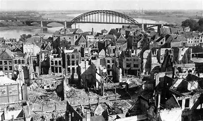

Nieuws ·
Lezing Nijmegen gebombardeerd! in de Mariënburgkapel

Op zondag 18 februari 2024 van 15.30 – 17.00 uur is er een lezing van Ber Jansen over het bombardement op Nijmegen in 1944. Deze wordt gehouden bij het Huis van de Nijmeegse Geschiedenis. De lezing is voor Huisvrienden gratis bij te wonen, anderen betalen 5 euro per persoon. Aanmelden kan via: Lezing: Nijmegen gebombardeerd! – Huis van de Nijmeegse Geschiedenis De Mariënburgkapel aan de Mariënburg 26 in Nijmegen is rolstoelvriendelijk ingericht.
Tachtig jaar geleden
Op 22 februari 2024 is het tachtig jaar geleden dat Nijmegen werd gebombardeerd. Er vielen bijna 800 doden en ongeveer 2.000 gewonden. Het Huis van de Nijmeegse Geschiedenis staat stil bij deze gebeurtenis met een lezing van Ber Jansen. Er is vanaf 1 februari hierover ook de tentoonstelling ‘Twee minuten’ te zien in de Mariënburgkapel.
Grote ramp
Door het bombardement van de Geallieerden werd op 22 februari 1944 een groot deel van de oude historische binnenstad van Nijmegen en het station werd onherstelbaar beschadigd. Daarmee is het bombardement van Nijmegen één van de grootste rampen die Nederland in de 20ste eeuw hebben getroffen. Na de oorlog werd aan deze gebeurtenis weinig aandacht besteed. Pas twintig jaar na het bombardement werd het voor het eerst herdacht.
Vergissing
Ber Jansen vertelt in een lezing van drie kwartier de gevolgen van het bombardement. Hij zet de gebeurtenissen overzichtelijk op een rij. Waar vielen de meeste slachtoffers en waarom was het aantal slachtoffers zo hoog? Hij gaat in of het een vergissingsbombardement van de Geallieerden was en waarom was er na de oorlog zo weinig aandacht voor.